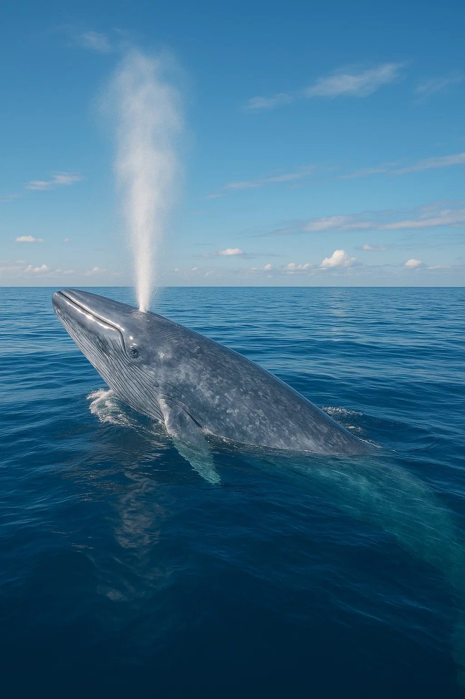

Animais Marinhos em Extinção
O oceano fala, mas será que estamos ouvindo?
Conheça as espécies marinhas ameaçadas, os riscos que enfrentam e ações práticas e divertidas para ajudar a proteger nossos oceanos.
Conheça as espécies marinhas ameaçadas, os riscos que enfrentam e ações práticas e divertidas para ajudar a proteger nossos oceanos.
A pesca predatória, a poluição (especialmente plásticos), a destruição de habitats e as mudanças climáticas reduzem drasticamente populações de espécies marinhas.
Cada espécie desempenha papel único no ecossistema: sem elas, cadeias alimentares se quebram e serviços essenciais (como controle de pragas e ciclagem de nutrientes) desaparecem.
Com reservas marinhas e programas de reabilitação, espécies como algumas tartarugas e populações de baleias começaram a se recuperar — ações locais geram impacto global.




Principais causas: pesca excessiva, perda de habitat (recifes e manguezais), poluição plástica, derramamentos e as mudanças climáticas que alteram correntes e temperaturas.
Reduza o uso de plástico descartável, prefira frutos do mar de origem sustentável, participe de limpezas de praia, apoie ONGs e compartilhe informação confiável.
Sim — quando protegemos e criamos áreas marinhas protegidas, muitos ecossistemas se regeneram com o tempo. A ação coletiva acelera essa recuperação.
Baixe o kit educativo, compartilhe e comece uma ação local.
IUCN Red List — https://www.iucnredlist.org
Projeto Tamar — https://www.tamar.org.br
WWF Brasil — https://www.wwf.org.br
Ocean Conservancy — https://oceanconservancy.org